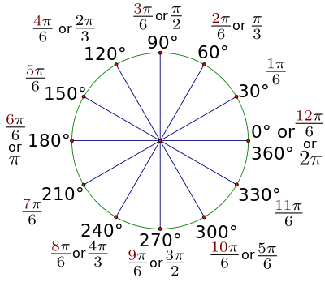

Whenever we rotate in JavaScript, we ALWAYS rotate around the origin (upper left corner by default). However this is most often not what we want. The good news is we can use translate to move the origin to any location and rotate around that location. In order to do this, we need to save the current coordinate system and then restore it after we are done. p5 has two functions that help us accomplish this: push() and pop()
push() // push or save the current coord system into the stack
translate(this.loc.x, this.loc.y);
rotate(someAngle);
triangle(-5, 0, 5, 0, 0, -15);
pop() // pop or restore the coordianate system from the stack
Description: Lerp calculates a number between two numbers at a specific increment. The amt parameter is the amount to interpolate between the two values: start and stop
Syntax
lerp(start, stop, amt)
We can use this with the our ball location and the location of the mouse as our start and stop positions. mouseX and mouseY are p5 values that give the location of the mouse at any moment during the run of the program. First create a vector for the location of the mouse, then lerp between the ball location and the mouse location
var mouseLoc = createVector(mouseX, mouseY);
this.loc = p5.Vector.lerp(this.loc, mouseLoc, .09)
Each Vector has many functions. One of these is dist(). This method will return the distance between two vector objects:
//returns the distance between two objects
var dist = vector1.dist(vector2);
The splice() method changes the contents of an array by removing existing elements and/or adding new elements.
Assume you have an array of boids named boids. To remove an element from the arrray, you can use the following code:
boids.splice(i, 1)// remove one element at index i
How do you know which boids to remove from the boids array?